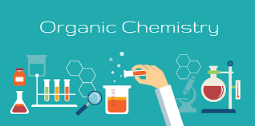

Organic Chemistry
What is Organic Chemistry?

Organic chemistry is the branch of chemistry that involves the scientific study of organic compounds (compounds that contain covalently bonded carbon atoms). This branch of chemistry primarily deals with the structure and chemical composition of organic compounds, the physical and chemical properties of organic compounds, and the chemical reactions undergone by these compounds. Advancements in the field of organic chemistry have made numerous contributions to human society, such as the synthesis of several drugs, polymers, and other natural products. Synthetic organic chemistry is an important application of organic chemistry that deals with the design and construction of organic compounds for practical purposes.
The term 'organic' was coined because the field of organic chemistry was initially finite to compounds that were produced by living organisms. This was attributed to some ‘vital force’ that was present in organic substances as they had something that inanimate substances lacked. The above theory was debunked when Urey Miller synthesized urea from inorganic substances but the classification is still in use.
Organic chemistry is a vast science due to one key property exhibited by the element carbon, which is called carbon catenation. Carbon has the exceptional ability to form very stable bonds with other carbon atoms, giving it the ability to form stable molecules with relatively complex structures. Catenation is the ability of an element to form bonds with an atom of the same kind. Hence, the vastness of organic chemistry can be attributed to this property of carbon.
Table of Content
- Cleavage of Bonds
- Reaction Intermediates
- What are Carbenes?
- What are Free Radicals?
- Carbanions and Carbocations
- Transition State
- Reagents in Organic-Chemistry
- Types of Reactions
- Field Effects
- Resonance Effect
- Steric Hindrance
- Stability of Intermediates
importance of organic chemistry in the present age is as immense as it had been since its inception. It plays an important role in our everyday life because food, medicines, paper, clothes, soap, perfumes, etc are indispensable to us for proper living. The study of organic chemistry is important for chemists and pharmacists in synthesizing medicines for the alleviation of human suffering.
The reactions in organic chemistry occur between organic compounds. Let us now study the different terminologies, classifications, field effects, types of reagents, the stability of intermediates, and properties in detail.
Introduction to Organic Chemistry
Cleavage of Bonds
The reactions in organic chemistry occur by the breaking and making of bonds. Bonds can cleave in either of two ways:
- Homolytic Cleavage
- Heterolytic cleavage
What is Homolytic Cleavage?
If the covalent bonds between two elements break in such a way that each of the elements get their own electrons, it is called homolytic cleavage. That is, each element gets an electron. Homolytic cleavage results in the formation of free radicals.
What is Heterolytic Cleavage?
If the covalent bonds between two elements break heterolytically, i.e., unequally, it results in the formation of charged species. This type of bond breaking, where the electrons are unevenly distributed is called heterolytic cleavage.
Reaction Intermediates in Organic Chemistry
Intermediates can be understood as the first product of a consecutive reaction. For example, in a chemical reaction, if A→B and B→C, then, B can be said to be the intermediate for reaction A→C. The reactions in organic chemistry occur via the formation of these intermediates.
What are Carbenes?
Carbenes (H2C) are neutral and reactive species that have six electrons in the outer shell of carbon making them electron deficient. Since carbenes are species having two odd electrons, we can classify carbenes based on their spin states.
Singlet Carbene
The electrons are present in different orbitals with opposite spin. The electrons are paired in sp2 hybridized orbitals and behave as paired electrons.
Spin state= (2S + 1), S for singlet carbene is zero as the electrons are antiparallel.
Therefore, Spin state = (2 * 0 + 1) = 1
Triplet Carbene
Both the electrons are present in different orbitals and they possess the same spin.
Spin state = (2S + 1), S for triplet carbene is 1 as both the electrons have the same spin.
Therefore, Spin state= (2 * 1 + 1) = 3
Hybridization of Singlet and Triplet Carbene
Carbene Hybridisation: They are sp2 hybridized with a bent shape. They have a bond angle of 103° and bond length of 112 pm.
Singlet Carbene
Hybridization of Singlet Carbene
Triplet Carbene Hybridization: They possess a sp hybrid orbital with a linear shape. They have a bond angle and bond length of 180° and 103 pm respectively.
Why Triplet Carbene is more Stable than Singlet?
Triplet carbene has lower energy than singlet carbene because in singlet carbene there are more inter-electronic repulsions as both the electrons exist in the same orbital whereas in triplet carbene the two electrons exist in different orbitals making it possess less energy.
What are Free Radicals?
Radicals in organic chemistry are formed by the homolytic cleavage of carbon bond. The shape of the species formed is planar and the carbon is sp3 hybridized with an odd electron being placed in the p-orbital. If the free radical is relatively stable then they may possess a planar structure.
Carbanions and Carbocations
What are Carbanions?
They are generated by heterolytically cleaving a group attached to carbon without removing the bonded electrons. This makes the carbon have a pair of electrons, thereby, imparting a negative charge on the carbon. CH3– is isoelectronic with NH3 and it is sp3 hybridized and the shape is pyramidal owing to the presence of a lone pair of electrons.
What are Carbocations?
Carbocations have a sextet of electrons on the carbon-containing positive charge and hence termed 'cation'. It is sp2 hybridized and has an empty p-orbital. The shape is planar. It is generally formed by heterolytic cleavage of a carbon-heteroatom bond.
Transition State in Organic Reactions
We saw the intermediates that could be formed in an organic reaction, now let us look into transition states and the difference between an intermediate and a transition state.
The intermediates in organic chemistry are formed in a multi-step reaction but some reactions can occur in a single step without having to form an intermediate. These reactions will occur by going through a transition state. This can be clear by looking at the energy profile diagram for a reaction, R→P
Intermediates in Organic Chemistry
The transition state, corresponds to the highest energy in the reaction, after which it can give either the products or in the case of a reversible reaction, the reactants.
Consider a reaction, A→D with the following steps, A→B, B→C, and C→D
The energy profile for this reaction is given below,
We can see that B and C are the products of a reaction and hence they are termed intermediates. The highest energy of a particular reaction should be the transition state.
Conclusion:
From the above example we can show that the intermediates are isolable, that is, they can be isolated. On the other hand, the transition state is not isolable because we assume the reaction to take place via a transition state cannot be isolated.
Reagents in Organic Chemistry>
Reagents are the chemicals that we add to bring about a specific change to an organic molecule. Any general reaction in organic chemistry can be written as:
Substrate + Reagent → Product
Where the substrate is an organic molecule to which we add the reagent. Based on the ability to either donate or abstract electrons, the reagents can be classified as:
- Electrophiles
- Nucleophiles
Electrophiles
Electrophiles are electron-deficient organic reagents. It can be generalized that all the positive charge containing species are electrophiles. For example, H+, NO2+, CH3+, Cl+
Neutral molecules that are electron deficient can also act as electrophiles. Lewis acids like AlCl3 and BF3 are examples of neutral electrophiles.
Nucleophiles
Nucleophiles are electron-rich organic reagents. They seek bonding centers with other nuclei and hence the name, nucleophile. It can be generalized that negative charge containing species are nucleophiles. For example, H–, CH3–, and Cl–.
Neutral molecules with a lone-pair of electrons on the heteroatom can act as a nucleophile. For example, H2O, NH3, CH3OH.
Types of Reactions in Organic Chemistry
Organic reactions are reactions that occur between organic compounds. The reactions in organic chemistry are broadly classified into six categories. Let us study in detail these different types of reactions and their products.
Substitution Reactions
R-X + Y → R-Y +X
Where R-X is the substrate, Y is the reagent (which can be electrophilic or nucleophilic) and X is called the leaving group. The term substitution means one group is replacing the other group.
Types of Substitution Reaction:
- Nucleophilic Substitution ( SN1, SN2, SNi)
- Nucleophilic Aromatic Substitution (SNAr)
- Addition Reactions
Addition reactions can be further classified into:
- Electrophilic Addition
- Nucleophilic Addition
- Elimination reactions
Elimination Reactions
These reactions can be said to be the reverse of an addition reaction, wherein a simple molecule (HX, H2O) is removed from the substrate i.e. a molecule is said to be eliminated from the substrate. Elimination reaction can be classified further into E1, E2, E1CB
- Oxidation and reduction reactions
- Pericyclic reactions
- Molecular rearrangements
Field Effect in Organic Chemistry
Inductive Effect
It is an electron delocalization effect via σ bonds that arises due to the difference in electronegativities. For example, in a σ bonded organic compound like C-C-C-Cl, the carbon attached to the chlorine atom can be referred to as the σ-carbon, and the one adjacent that carbon as the ß-carbon and so on.
Now, since Chlorine is more electronegative than carbon, it withdraws the electrons that are present via the σ bond toward itself, thereby making Cσ fractionally positive. Since it is devoid of electrons, Cσ now being slightly electropositive than Cß pulls the sigma bonded electrons of Cσ-Cß bond toward itself and in this process, it makes Cß slightly electropositive.
The electron-withdrawing effect of the Chlorine atom is being transmitted through the carbon chain via the σ bonds. This transmission of charges decreases rapidly with the number of intervening σ bonds. We can practically ignore this effect beyond Cß.
The arrow is pointed toward the more electronegative atom. If a group withdraws the electron from carbon, it makes carbon slightly electropositive. Such groups are called -I groups and the effect as -I effect. For example, -Cl, -Br, -CN and -NO2 are -I groups.
Groups that release electrons towards carbon are termed as +I groups and the effect is termed as +I inductive effect in organic chemistry. For example, alkyl groups like -CH3 are +I groups.
Electromeric Effect
It is the temporary delocalization of π-electrons in a compound containing multiple covalent bonds. It is important to note that it is only a temporary effect, that is, it occurs only when a reagent is added. Electromeric Effect in organic chemistry can be classified into two types:
- Positive Electromeric Effect
- Negative Electromeric Effect
Positive Electromeric Effect
>When the π-electrons are given to the attacking reagent. For example, the reactions alkenes and alkynes mostly occur via +E, this reaction is also called electrophilic addition.
The proton adds at C-1 as the π-electrons were given to the attacking reagent (H+). This results in the formation of a carbocation.
Negative Electromeric Effect
When the π-electrons are shifted to a more electronegative atom (O, N, S) joined via multiple bonds. For example, the reactions of aldehydes and ketones occur predominantly by -E effect. It is also called nucleophilic addition.
Mesomeric Effect
possessing sigma-bonds and pi-bonds alternatively exhibit the mesomeric effect. The effect is exhibited due to the permanent delocalization of π-bonds. This increases the number of resonating structures which makes the molecules of organic chemistry more stable. Such kind of a system where there are alternative sigma and pie bonds are called conjugated.
- Positive mesomeric effect
- Negative mesomeric effect:
Positive Mesomeric Effect
This effect is exhibited when the direction of the delocalization of electrons is away from the position where the group is attached. Normally groups having a lone pair of electrons attached to a conjugated system push electrons into the conjugated system, that is, away from them.
Groups in organic chemistry showing positive mesomeric effect (+M) effect are -OH, -OR, -NH2, -SH, -X, etc.
Negative Mesomeric Effect
This effect is exhibited when the direction of the delocalization of electrons is towards the position where the group is attached. These are generally electron-withdrawing groups of organic chemistry.
Resonance Effect
For certain molecules like carbonate ion (CO32-), one single Lewis structure would not be enough to explain all of the properties. In that case, the molecule is said to have more than one structure.
Each of those structures can explain some of the properties but not all of the properties. The actual structure of the molecule is a hybrid of all the possible structures (canonical forms). This phenomenon is called resonance in organic chemistry. If resonance occurs, each bond would be both, a single bond and a double bond at the same time i.e. the bond order would lie between one and two.
Resonating structures should fulfil the following criteria:
- All atoms should have the same positions in all the structures.
- There should have the same number of paired and unpaired electrons.
- The structures should have almost the same energies.
Note: Canonical forms do not have any existence in reality.
Resonance Energy
The energy difference between the most stable canonical form and the resonance hybrid is known as Resonance Energy. The more the resonance energy, the more is the stability.
Rules for finding out the most stable canonical form:
- The canonical form with no charges is the most stable
- The canonical form with more number of covalent bonds is more stable
- The canonical form where unlike charges are in close proximity are more stable
Role of Steric Hindrance
The structure and reactivity of many compounds in organic chemistry are greatly dictated by the presence of bulky groups or constituents in the molecule. This is called steric hindrance. It arises because of inter-electronic repulsions due to spatial crowding amongst bulky groups. Using steric factors, we can conclude that trans-2-butene is more stable than cis-2-butene.
Steric Hindrance
Steric Hindrance in Organic Chemistry
Stability of Intermediates
Carbocations
The stability of carbocations can be explained by the Inductive Effect.
CH3++CH2(CH3) +CH(CH3)2+C(CH3)3 i.e. Methyl Primary (1°) Secondary (2°) Tertiary(3°)
We know that alkyl groups of organic chemistry are +I groups, that is, they release electrons through the sigma bonds.
Since the carbon is deficient of electrons, we can say that as the number of methyl group increases, the stability of the carbocation increases. Since the electropositive carbon is satiated by the electrons given by the methyl groups via +I effect.
Stability of Carbocations
Therefore, the stability order of carbocations in organic chemistry is of the order 3° > 2° > 1° > Methyl carbocation.
Hyperconjugation
When a C-H σ-bond is in conjugation with a carbocation, this effect is observed. A carbocation has a vacant p-orbital. The bonded σ-electron pair of the C-H bond is displaced toward the vacant p-atomic orbital. This increases the electron density in the empty p-AO.
It is, therefore, a resonance effect where a C-H bond breaks and the σ-electron pair is delocalized to the vacant p-AO of the carbonation. Since the bond between C and H is broken, it is also called ‘no bond resonance’. It is also referred to as the Baker-Nathan effect.
Hyperconjugation
More the number of σ-hydrogens in a carbocation, that many hyperconjugated structures would be possible. More the number of structures more is the stability of the species.
Stability of Carbanions
The stability of carbanions can be explained using the inductive effect.
CH3 — CH2(CH3) — CH(CH3)2 — C(CH3)3 i.e. Methyl Primary (1°) Secondary (2°) Tertiary (3°)
Since alkyl groups are electron releasing by nature through induction, we can say that more the number of methyl groups attached to the carbon having a negative charge, less would be its stability.
Stability of Carbanions
This is because, the carbon already has a negative charge, to which the methyl groups push electrons via induction. This results in inter-electronic repulsions and destabilizes the species.
Therefore the stability order for carbanions is as follows
3°< 2°< 1° <Methyl carbanion
Stability of Free Radicals
The stability of free radicals in organic chemistry follows the same trend as that of carbocations.
CH3-CH2(CH3)-CH(CH3)2-C(CH3)3 i.e. Methyl Primary (1°) — Secondary (2°) — Tertiary(3°)
Therefore, the stability order of free radicals is of order: 3° > 2° > 1° > Methyl carbocation
This can be explained with the help of Hyperconjugation that we saw, but here there would be an overlap between the σ-bond of C-H and the odd electron in the p-orbital of carbon.